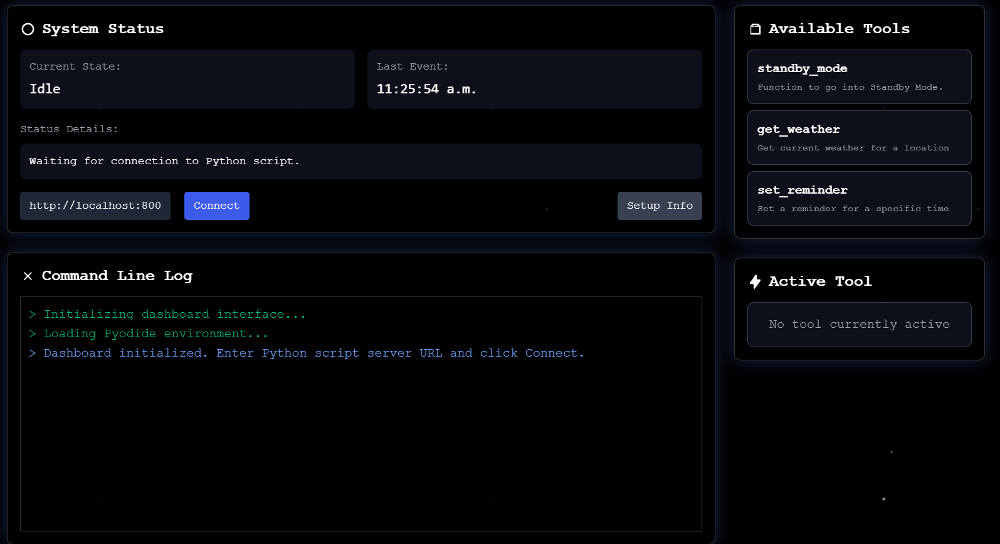

Your SMART Personal Assistant.
Project Report
Felix Egan
Your SMART Personal Assistant.
Project Report
Felix Egan
P.L.U.T.O., which stands for Productivity & Logical Utility Task Organizer, is an innovative personal assistant designed to enhance productivity through intelligent, self-teaching features. By integrating advanced AI technologies, P.L.U.T.O. adapts to individual user needs, offering a personalized and evolving user experience.
P.L.U.T.O. was created to address the limitations of traditional personal assistants that offer static functionalities. By leveraging AI, it provides customized solutions, making it a versatile tool for users seeking to optimize their daily tasks. The project integrates ethical considerations to ensure responsible operation.
The development process involved using Python and AI tools to build a modular platform compatible with various devices. Despite challenges with beta APIs, I achieved an intuitive user interface and successful integration of ethical databases, aligning with user values.
Future enhancements include refining the user interface, enabling user-contributed tools via a Public Tool Creator, and developing a web application to expand accessibility and functionality.
The concept for P.L.U.T.O. emerged from the need for a personal assistant that transcends basic task management and information retrieval. Unlike conventional assistants, P.L.U.T.O. was envisioned as a dynamic, learning entity capable of evolving alongside its user. The goal was to create a personalized companion that bridges the gap between advanced technology and everyday efficiency, curating responses and tools to enhance the user experience continuously.
P.L.U.T.O. simplifies and boosts productivity by incorporating real-time OpenAI APIs for seamless communication and an o4-mini and 4o-mini-realtime APIs for learning and integrating new tools. These features enable P.L.U.T.O. to deliver tailored solutions, making it a versatile and intelligent assistant that adapts to the unique needs of each user.
The development process utilized Python libraries such as OpenAI and LangChain, which form the backbone of P.L.U.T.O.'s communication and self-teaching functionalities. Tools like VSCode, GitHub Copilot, and Cursor IDEs were employed to create a robust, modular platform, ensuring seamless updates and broad device compatibility.
A significant challenge was navigating the beta OpenAI real-time API, which had unclear documentation, necessitating extensive troubleshooting. Additionally, achieving consistent accuracy in function execution required substantial effort to fine-tune the model's performance, testing my problem-solving skills.
Despite these hurdles, we are proud of several achievements. The user interface is evolving into a highly intuitive and user-friendly design, aligning with our vision for P.L.U.T.O. Furthermore, integrating OpenAI's ethical database ensures that the assistant operates responsibly, reflecting user values and ethical standards.
Throughout this journey, we gained valuable insights into implementing OpenAI’s real-time API effectively, curating adaptive responses tailored to user needs, and leveraging stored memory to enhance personalization. These lessons are foundational for further developing P.L.U.T.O. into a more dynamic assistant.
Looking ahead, we plan to refine P.L.U.T.O.’s capabilities by enhancing the user interface for improved usability and aesthetics. We aim to develop a Public Tool Creator, empowering users to contribute and customize functionalities. Additionally, a dedicated website and web application are in development, alongside efforts to optimize the assistant’s learning and real-time models for better adaptability and function calling.
To build P.L.U.T.O., we utilized a variety of AI tools and models, each selected for their specific strengths:
We also developed a custom Mix based OpenWakeWord, trained on self-generated data for accurate wakeword detection.
The following technologies and tools were used to develop P.L.U.T.O.:
| Category | Tools and Technologies |
|---|---|
| AI Tools and Models |
|
| Custom Development Tools |
|
| Programming Languages and Frameworks |
|
| Development Tools |
|
Our development journey was both challenging and rewarding. We began with the vision of creating a personal assistant that could learn and adapt to individual user needs, surpassing the capabilities of traditional static assistants. The initial concept focused on real-time communication and self-teaching abilities, outlined through detailed planning of core features.
We harnessed AI tools to accelerate coding efforts. OpenAI's ChatGPT o4-mini and Anthropic's Claude Sonnet 3.7 generated high-quality Python code, allowing rapid prototyping and iteration. Google's Gemini 2.5 facilitated HTML code generation for the user interface, while Lovable AI created a demo webpage to showcase P.L.U.T.O.'s capabilities.
A pivotal intervention was integrating OpenAI's 4o-Realtime-API, enabling real-time interactions essential for a responsive assistant. However, the beta nature of this API presented challenges due to unclear documentation, requiring extensive troubleshooting. Implementing self-learning via OpenAI's o3 was another critical step, allowing P.L.U.T.O. to create and integrate new tools based on user interactions. Ensuring consistent function execution accuracy was a hurdle, addressed through persistent fine-tuning and testing.
Development occurred in VSCode and Cursor IDEs, with GitHub managing version control. The final project not only met our initial goals but also expanded P.L.U.T.O.'s capabilities, incorporating a more robust architecture than originally envisioned, thanks to iterative improvements.
We considered several ethical and practical aspects during P.L.U.T.O.'s development:
Co-creating with AI was a transformative experience, yielding several key takeaways:
This project underscores AI's potential to amplify human creativity and productivity. The efficiency gains were remarkable, achieving in weeks what might have taken months traditionally. AI's innovative suggestions opened new possibilities, shaping P.L.U.T.O.'s development. Ensuring ethical operation was paramount, with the integration of ethical guidelines reinforcing P.L.U.T.O.'s integrity.
In conclusion, developing P.L.U.T.O. has been an enriching journey, equipping us with skills and insights for leveraging AI in creating adaptive, user-centric solutions.